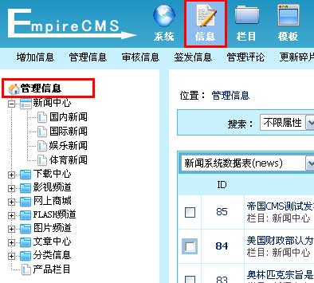

| 管理网站的信息内容。 |
|
||
| 一、进入管理信息界面： |
| 可通过四种途径进入管理信息界面，以下分别枚举： |
| 途径一： |
| 通过快捷菜单：单击“管理信息”快捷菜单，见下图，进入管理信息界面。 |
| 途径二： |
| 单击“信息”菜单，左侧出现栏目菜单列表界面，单击“管理信息”子菜单，见下图，进入管理信息界面。 |
|  |
| 途径三：进入单个栏目下的信息管理。 |
| 单击“信息”菜单，左侧出现栏目菜单列表界面，选择要管理信息的终极栏目（如栏目“娱乐新闻”）并单击，见下图，进入管理信息界面。 |
| 途径四： |
| 单击“栏目”菜单，左侧出现栏目管理子菜单界面，单击“管理信息”子菜单，见下图，进入管理信息界面。 |
| 二、管理信息界面功能介绍（按表管理） | ||||||||||||||||||||||||||||||||||||||||||||||||||||||||||||||||||||||||
|
||||||||||||||||||||||||||||||||||||||||||||||||||||||||||||||||||||||||
| 三、管理信息界面功能介绍（按栏目管理） | ||||||||||||||||||||||||||||||||||||||||||||||||||||||||||||||||||||||||||||||||||||||||
|
||||||||||||||||||||||||||||||||||||||||||||||||||||||||||||||||||||||||||||||||||||||||
| 四、信息管理操作： | ||||||||||||||||||||||||||||
| (一)、修改信息 | ||||||||||||||||||||||||||||
| 1. 选中要修改的信息所在行，单击修改； 2. 出现“管理信息->修改信息”界面（界面相关参数设置参考“增加信息篇”一节），修改信息相关参数设置； 3. 单击页面底部“提交”按钮以保持您所做的修改。 |
||||||||||||||||||||||||||||
| (二)、复制信息 | ||||||||||||||||||||||||||||
| 1. 选中要复制的源信息所在行（可同时选择多条信息进行复制）； 2. 在“选择要移动/复制的目标栏目”下拉框中选择要复制到的目标栏目； 3. 单击“复制”按钮，完成信息复制操作。 注： 同一系统模型下的栏目之间才能进行信息复制，不同系统之间的信息不能进行复制。 |
||||||||||||||||||||||||||||
| (三)、移动信息 | ||||||||||||||||||||||||||||
| 1. 选中要移动的原信息所在行（可同时选择多条信息进行移动）； 2. 在“选择要移动/复制的目标栏目”下拉框中选择要移动到的目标栏目； 3. 单击“移动”按钮，完成信息的移动操作。 注： 同一系统模型下的栏目之间才能进行信息移动，不同系统模型之间的信息不能进行移动操作。 两个栏目之间的信息进行移动时，可使用批量转移信息功能，操作可见管理员手册。 |
||||||||||||||||||||||||||||
| (四)、删除信息 | ||||||||||||||||||||||||||||
| 1. 选中要删除的信息所在行，单击删除链接； 2. 出现确认对话框，单击“确定”按钮执行删除操作。 如果要批量删除多条信息，则 1. 多选要删除的信息所在行，单击（批量）“删除”按钮； 2. 出现确认对话框，单击“确定”按钮执行删除操作。 注意：删除的信息不可恢复，此操作需谨慎。 删除多栏目信息时，可使用批量删除信息功能，操作可见管理员手册。 |
||||||||||||||||||||||||||||
| (五)、审核信息：只有经过审核的信息才能在前台显示。 | ||||||||||||||||||||||||||||
| 1. 多选要审核的信息所在行，单击“审核”按钮； 2. 出现确认对话框，单击“确定”按钮执行审核操作。 |
||||||||||||||||||||||||||||
| (六)、签发信息：信息需要上级领导或多人签字才能发布到前台。 | ||||||||||||||||||||||||||||
| 1、设置签发：设置信息流转工作流。 | ||||||||||||||||||||||||||||
| (1)、终极栏目>选项设置>里选择信息流转的工作流。 | ||||||||||||||||||||||||||||
| (2)、设置工作流流转后，增加信息就需要签发才能审核通过。 | ||||||||||||||||||||||||||||
| (3)、如果信息需要签发才能发布的，信息标题会显示“(审核中)”，如下图： 点击信息标题中的“(审核中)”，可查看签发情况与退稿评语。 |
||||||||||||||||||||||||||||
| 2、管理签发：签发人员到哪里签发呢？ | ||||||||||||||||||||||||||||
方法1：通过快捷菜单：单击“签发信息”快捷菜单，进行签发；
|
||||||||||||||||||||||||||||
| 方法2：单击“栏目”菜单，左侧出现栏目管理子菜单界面，单击“签发信息”子菜单，进入管理签发信息界面， 见下图： | ||||||||||||||||||||||||||||
| 进入管理签发信息界面， 见下图： | ||||||||||||||||||||||||||||
| 选择需签发或退稿的信息，单击[签发]，进入签发信息界面： | ||||||||||||||||||||||||||||
| 可对信息是否通过/返回/否决进行操作。 | ||||||||||||||||||||||||||||
| (七)、信息归档： | ||||||||||||||||||||||||||||
| 对于一些旧的信息，用户可以采用归档功能，将其归档到其它数据表，以减轻主数据表的负担，使系统稳定性与效率更高。 | ||||||||||||||||||||||||||||
| 1、从管理信息页面点击“管理归档”链接，进入管理归档信息界面，如下图： | ||||||||||||||||||||||||||||
| 2、进入管理归档信息界面： | ||||||||||||||||||||||||||||
|
||||||||||||||||||||||||||||
| 归档/还原归档多栏目信息时，可使用批量归档信息功能，操作可见管理员手册。 |